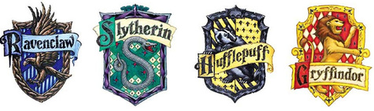

En Hogwarts, los profesores utilizan los puntos de cada casa para recompensar o castigar a los estudiantes. A continuación, se encuentran los cinco estudiantes que a través de los libros han ganado la mayor cantidad de puntos para sus respectivas casas.
| Nombre | Puntos Ganados | Puntos Perdidos | Netos Ganados |
|---|---|---|---|
| Ron Weasley | 310 | 108.3 | 201.7 |
| Hermione Granger | 210 | 105 | 105 |
| Harry Potter | 350 | 260.3 | 89.7 |
| Ginny Weasley | 50 | 0 | 50 |
| Luna Lovegood | 50 | 0 | 50 |
*Los puntos otorgados y deducidos a varios estudiantes a la vez fueron divididos para el número de estudiantes involucrados y añadidos a las sumas individuales
La información se obtuvo de aquí.
